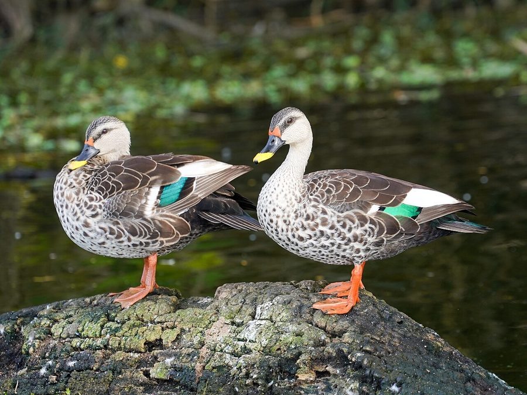

गुगरालIndian Spot-billed Duck
Anas poecilorhyncha · Anatidae · BRD-0081

- Scientific name
- Anas poecilorhyncha Forster, 1781
- Family
- Anatidae
- Hindi
- गुगराल / गर्म पाई
- Status here
- native
- IUCN
- LC
- Review
- audited and independently read
When to look कब देखें
Present all year.
Uses and possibilities उपयोग और संभावनाएँ
Drawn from the documented uses in the profile below, where each is labelled traditional, current or a research lead. All uses →
गुगराल / Indian Spot-billed Duck
Anas poecilorhyncha Forster, 1781 — Anatidae
गुगराल — भारतीय उपमहाद्वेश का सबसे बड़ा जंगली बतख, पूर्वी उत्तर प्रदेश की तालाबों और धान के खेतों में झुंड में देखा जाता है। इसके पंखों पर सफेद दागों की बारीक पंक्तियाँ होती हैं, और चोंच पर पीले रंग की पट्टी है — जिससे इसे "spot-billed" कहते हैं। ये तैरते-तैरते पानी की सतह पर पौधे खाते हैं।
Quick Identification त्वरित पहचान
| Feature | Description |
|---|---|
| Size | Large duck; 56–63 cm long; larger than pintails and teals |
| Plumage | Brown-grey overall; fine white spots on wings and back |
| Head | Male darker (glossy green-black); female brown with pale cheeks |
| Bill | Yellow with a black spot near the tip — distinctive feature |
| Tail | Pointed tail feathers (dabbler, not diver) |
| Behaviour | Dabbles at water surface; grazes on land |
Field tip: A large duck in flocks on ponds and rice paddies with a distinctive yellow bill bearing a black spot — is a Spot-billed Duck. The size (larger than most other ducks) and the spotted bill are diagnostic. Swims upright like a dabbler.
हिंदी — कैसे पहचानें:
बड़ा बतख, झुंड में तालाब पर।
चोंच पीली, काले धब्बे के साथ।
पंखों पर सफेद धब्बे।
पानी की सतह पर पौधे खाता है।
Morphology आकारिकी
Biometrics:
| Measurement | Range |
|---|---|
| Total length | 560–630 mm |
| Wing (flattened chord) | 260–290 mm |
| Tail | 90–110 mm |
| Bill | 50–65 mm |
| Tarsus | 35–45 mm |
| Weight | 800–1200 g |
Size: 56–63 cm long; wingspan 85–105 cm. Weight 800–1350 g. Largest dabbling duck in eastern UP.
Plumage (male): Head and neck glossy dark green to blue-black. Body brown-grey with fine white spots and barring on the wings and back. Rump darker. Looks rather dark overall in poor light.
Plumage (female): Brown overall, lighter than males, with pale cheeks and a pale supercilium (eyebrow). Retains the characteristic spotted wings.
Bill: Yellow with a black spot near the tip (where nostril is) — the most distinctive feature that gives the species its name.
Legs and feet: Dull yellow or greenish.
Eyes: Dark iris; small and rounded.
Breeding plumage: Males develop more iridescent and contrasting colours during breeding season.
Sexes: Clearly dimorphic. Females much duller. Juveniles resemble females.
Vocalisations. Three main call types:
- Contact and alarm call: A loud, harsh quacking — qwaak-qwaak — given in flight and when disturbed; frequency 1.0–3.0 kHz.
- Courtship call: Males produce softer whistle-like calls during pair formation.
- Territorial call: Loud quacking from water, establishing feeding territories.
हिंदी: तेज़ क्वैकिंग आवाज़। झुंड में आवाज़ें सुनाई देती हैं।
Ecological Role पारिस्थितिक भूमिका
Dabbler and herbivore: Unlike diving ducks, spot-billed ducks feed by tipping forward in shallow water and dabbling at the surface. Diet includes:
- Aquatic plants and seeds
- Grain from paddy fields (especially during harvest)
- Aquatic invertebrates and small fish
- Land plants when grazing
Grazing duck: Often seen on land, grazing on grass and herbage — unusual for ducks and important for maintaining open water vegetation.
Seed disperser: Many aquatic plants survive gut passage and are dispersed in feces. May play a role in maintaining plant diversity in wetlands.
Pest control: Eats large numbers of aquatic invertebrates, particularly mosquito larvae and other pest insects.
Prey of: Fish eagles, snakes, jackals; foxes and jackals may take eggs and chicks.
हिंदी: पानी की सतह पर दाना खाता है। घास भी चरता है। कीड़ों को खाता है।
Life Cycle / Phenology जीवन चक्र
Resident: Present year-round in eastern UP; no migration, though some local movements occur.
Breeding: February–June (winter through early monsoon). More tied to local water conditions than season.
Nesting: Nest on ground near water, often on small islands or in dense reeds. Cup-shaped, lined with down.
Eggs: 8–10 buff or olive eggs. Female alone incubates ~24 days while males guard from nearby.
Chicks: Precocial; leave nest within hours of hatching. Can dive and swim immediately. Fed by mother for ~2 months.
Fledging: Young fly at ~60 days.
Roosting: Nocturnal at lakes; diurnal movement to and from feeding sites.
हिंदी: पूरे साल रहता है। सर्दियों में प्रजनन करता है। झुंड में रहता है।
Prey भोजन
| Prey | Hindi | Capture Method |
|---|---|---|
| Aquatic plants and seeds | जलीय पौधे, बीज | Dabbling at surface |
| Paddy grain | धान | Gleaning in harvested fields |
| Aquatic invertebrates | जलीय कीड़े | Dabbling; filter-feeding |
| Grasses and herbage | घास | Grazing on land |
हिंदी: पानी की सतह पर दाना और कीड़े खाता है।
Conservation Status संरक्षण स्थिति
IUCN Status: Least Concern (LC)
Wildlife Protection Act, 1972: Listed under Schedule IV (Protected) of the Wildlife (Protection) Act, 1972, as amended in 2022. Hunting Spot-billed Ducks is illegal in India.
Threats: Habitat loss; pollution; hunting in some areas despite legal protection; pesticide use in agriculture; entanglement in fishing nets.
Population status: Populations remain relatively stable across the Indian subcontinent, though local declines are documented in some areas.
हिंदी: कानून में संरक्षित है।
Agricultural / Human Relevance कृषि और मानव संबंध
Rice field grazing: Spot-billed Ducks feed on newly sprouted rice seedlings, which can cause minor crop damage. However, this is generally tolerated due to the small scale.
Beneficial pest control: Consumption of aquatic invertebrates and weed seeds provides agricultural benefit that likely outweighs crop damage.
Game bird: Hunted illegally in some areas despite legal protection. Local attitudes vary from protection (seen as eating ducks with rice) to persecution.
Cultural significance: Mentioned in some regional folklore, but lacks the major cultural importance of storks and cranes.
हिंदी: कभी-कभी खेत को नुकसान पहुँचा सकते हैं, पर कुल मिलाकर मददगार हैं।
Expected Locally स्थानीय रूप से अपेक्षित
Not a field record. Written from published accounts for eastern Uttar Pradesh. No confirmed local sighting yet — if you have seen it, that is what the atlas needs.
अभी तक स्थानीय पुष्टि नहीं। यह विवरण प्रकाशित स्रोतों से है।
Common and widespread year-round across Basti district on all water bodies — ponds, tanks, lakes, channels, and slow rivers. Flocks of tens are to be expected on larger tanks in winter. More abundant during winter months when supplemented by migratory birds. Breeding pairs reported throughout the year but concentrated in February–June.
Distribution वितरण
Global range: Widespread across the Indian subcontinent and Southeast Asia, from Pakistan through India to Myanmar and Indonesia.
In India: Found throughout India in freshwater wetlands from sea level to about 1,500 m elevation.
In Uttar Pradesh: Common throughout all districts, particularly abundant in the Gangetic plains.
In Basti district / eastern UP: Abundant year-round resident, concentrated at larger water bodies and wetland systems.
Research Questions शोध प्रश्न
Anyone can investigate these | कोई भी इन प्रश्नों की जाँच कर सकता है
- What is the population size and trend in your area? / कितने गुगराल हैं? — Count monthly at key water bodies.
- When and where do they nest? / घोंसले कहाँ बनते हैं? — Look for nesting in February–June.
- What percentage of diet is aquatic plants vs invertebrates? / क्या खाते हैं? — Observe feeding behaviour and examine droppings.
- Do they cause significant crop damage? / फसल को नुकसान पहुँचाते हैं? — Interview farmers; estimate damage if any.
- How do populations change seasonally? / मौसम में संख्या बदलती है? — Count monthly; separate residents from migrants.
Similar Species मिलती-जुलती प्रजातियाँ
| Species | How to tell apart | हिंदी |
|---|---|---|
| Pintail (Anas acuta) | Smaller; male has chocolate head, white breast; pointed tail | सर्दी का मेहमान, लंबी पूँछ |
| Shoveler (Anas clypeata) | Smaller; spatulate bill; different plumage pattern | हरी सिर, बड़ी चोंच |
| Wigeon (Anas penelope) | Smaller; male has chestnut head; winter visitor only | गहरे रंग का, सर्दियों में |
Field rule: A large dabbling duck with a yellow bill bearing a black spot, in flocks on ponds — is a Spot-billed Duck. The spotted bill is diagnostic.
Taxonomy & Classification वर्गीकरण
Original description. Anas poecilorhyncha was described by Johann Reinhold Forster in 1781 in his Zoologia Indica. Type locality: India. The species epithet "poecilorhyncha" means "variegated-billed" in Greek, referring to the spotted bill.
Subspecies. Three subspecies are recognised:
| Subspecies | Authority | Range | Notes |
|---|---|---|---|
| A. p. poecilorhyncha | Forster, 1781 | Indian subcontinent | Eastern UP subspecies — nominate form |
| A. p. haringtoni | Oates, 1900 | Myanmar and eastern regions | Slightly darker |
| A. p. zonorhyncha | (Swinhoe, 1866) | Southeast Asia (China, Vietnam) | Different spot pattern |
Family and order placement. Order Anseriformes, family Anatidae (ducks, geese, swans), containing approximately 150 species. The genus Anas contains the dabbling ducks found worldwide; it is the most diverse waterfowl genus.
Phylogenetic notes. Anas poecilorhyncha is sister to the African Mallard-like duck (A. undulata). The genus Anas is monophyletic and appears to be a relatively recent radiation.
IUCN status rationale. Assessed as Least Concern (LC). Extremely large range and population across Asia; populations are stable or slightly increasing. The species benefits from human-created wetlands like irrigation tanks and reservoirs.
Photo Gallery फोटो गैलरी
फोटो निर्देश: तालाब और नहर पर झुंड में आसानी से दिखते हैं। नर और मादा दोनों की फोटो लें। चोंच पर काले धब्बे को दिखाने के लिए क्लोज़-अप ज़रूरी है।
Photos needed आवश्यक फोटो
- [ ] Flock on water showing size and behaviour (झुंड पानी पर)
- [ ] Close-up of spotted bill detail (चोंच क्लोज़-अप)
- [ ] Male showing dark head and body markings (नर)
- [ ] Female for comparison (मादा)
- [ ] Grazing on land (घास पर चरते हुए)
No photos yet — add field photos to media/species/spot_billed_duck/ and run node scripts/sync_photos.js.
Atlas Connections संबंधित प्रजातियाँ
- Indian Lotus — foraging habitat; aquatic vegetation
- Bar-headed Goose — winter sympatry in some years; similar habitats
References संदर्भ
- Forster, J.R. (1781). Zoologia Indica. Sumtibus Booksellers, London. [original description]
- Ali, S. & Ripley, S.D. (1987). Handbook of the Birds of India and Pakistan. Vol. 2. Oxford University Press, New Delhi.
- Grimmett, R., Inskipp, C. & Inskipp, T. (2011). Birds of the Indian Subcontinent. 2nd ed. Christopher Helm, London.
- Rasmussen, P.C. & Anderton, J.C. (2005). Birds of South Asia: The Ripley Guide. Smithsonian Institution, Washington.
- BirdLife International (2023). Anas poecilorhyncha. IUCN Red List of Threatened Species.
- GBIF Occurrence Data — Anas poecilorhyncha, India (2024).
Source file: species/fauna/birds/spot_billed_duck.md